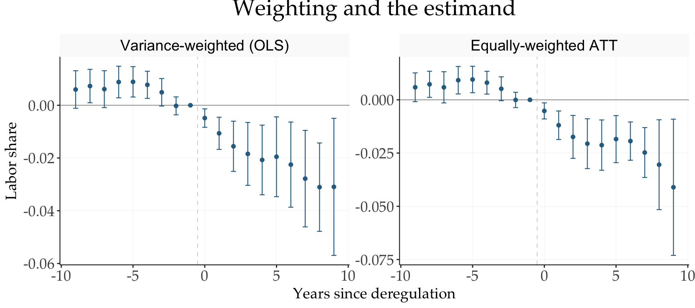
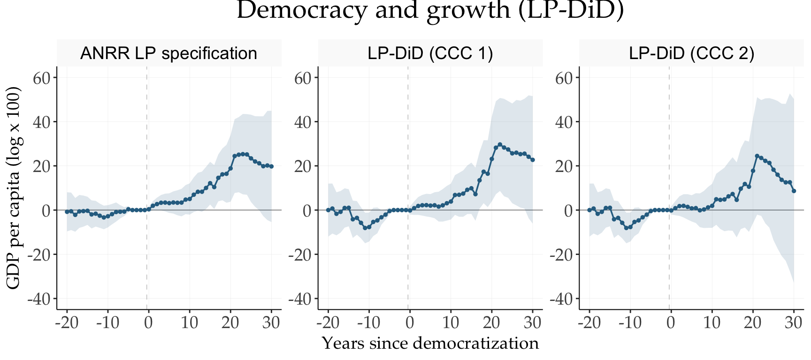

library(tidyMacro)
library(tidyverse)
set_theme(fThemeTidyMacro())
data("BankingDeregulation")
data("DemocracyGrowth")Local Projections Difference-in-Differences
Replicating Dube, Girardi, Jordà and Taylor 2025
1 What is LP-DID?
To see the main ideas and contributions of the paper, click below to expand:
TipWhat is LP-DID?
With staggered treatment adoption, conventional TWFE regressions may use previously treated units as controls for newly treated units. When treatment effects are dynamic or heterogeneous, these comparisons can generate negative weights and biased estimates.
A naïve application of Local Projections does not automatically solve this problem. At a given horizon (h), the control group may include:
- previously treated units that are still affected by treatment; or
- units that become treated between (t) and (t+h).
Thus, the main contribution of the paper is not simply applying LPs to DiD, but defining an appropriate clean control condition.
1.1 The LP-DiD estimator
For each horizon (h), LP-DiD compares newly treated units with units that remain untreated throughout the relevant horizon. A basic specification is
\[y_{i,t+h} - y_{i,t-1} = \delta_t^h + \beta_h^{LP-DiD}\Delta D_{it} + e_{it}^h.\]
The estimation sample includes:
- newly treated units, for which (D_{it}=1); and
- clean controls, which remain untreated at least until (t+h).
Under absorbing treatment, the clean control condition simplifies to
\[D_{i,t+h}=0.\]
By excluding previously treated and soon-to-be-treated observations from the control group, LP-DiD avoids the negative-weighting problem.
1.2 Identification and weighting
Under the standard assumptions of no anticipation and parallel trends, LP-DiD estimates a convex weighted average of cohort-specific treatment effects:
\[\beta_h^{LP-DiD} = \sum_g \omega_{g,h}\tau_{g,h}.\]
Importantly, the weights are nonnegative. The default estimator uses variance-based weights, which depend on cohort size and treatment variation. If the researcher instead wants the conventional equally weighted ATT, the LP-DiD regression can be reweighted accordingly.
1.3 Relation to existing DiD estimators
An important contribution of the paper is that several recent DiD estimators can be interpreted as special cases of the LP-DiD framework.
| LP-DiD implementation | Related estimator |
|---|---|
| Baseline variance-weighted LP-DiD | Stacked regression approach of Cengiz et al (2019). |
| Reweighted LP-DiD | Callaway and Sant’Anna (2020) |
| LP-DiD with alternative pre-treatment baseline | Closely related to Borusyak, Jaravel, and Spiess (2024) |
The main differences arise from the choice of:
- comparison sample;
- weighting scheme; and
- pre-treatment base period.
1.4 Relation to standard Local Projections
LP-DiD is closely related to the standard Local Projections (LP) approach used in macroeconomics, but the two methods generally estimate different causal objects. The main difference concerns how they treat subsequent changes in the treatment variable.
In a standard macroeconomic LP, an initial shock may generate further changes in policy or treatment in subsequent periods. The resulting impulse response therefore captures the overall dynamic response to the initial intervention, including the effects of the subsequent treatment path. In this sense, the object of interest is closer to the effect of a treatment plan rather than a single treatment event.
LP-DiD instead aims to isolate the effect of a one-off treatment event. When estimating the effect at horizon (h), it conditions on future treatment status and restricts the comparison to units whose treatment does not change over the relevant horizon. This removes the effects of subsequent treatments from the estimated response.
The distinction can therefore be summarized as follows:
- Standard LPs: estimate the dynamic response following an initial shock, allowing subsequent treatments or policy changes to occur.
- LP-DiD: estimates the effect of an individual treatment event by excluding comparisons contaminated by past or subsequent treatment changes.
The two approaches are therefore complementary rather than competing. A standard LP is appropriate when the objective is to estimate the overall response observed after a shock, including the treatment path that follows. LP-DiD is more suitable when the objective is to isolate the causal effect of a particular treatment event. In principle, an overall impulse response can be constructed by combining the one-off effects estimated by LP-DiD with the relevant treatment path.
The paper also notes two caveats. First, conditioning on future treatment may be problematic when future treatment assignment is endogenous. Second, when agents anticipate future treatments, a hypothetical one-off intervention may generate different responses from those observed under the usual treatment path.
Thus, LP-DiD should be viewed as an adaptation of the LP framework for a different counterfactual experiment: rather than asking for the overall response to a shock and its subsequent treatment path, it asks for the effect of an individual treatment event.
This chapter replicates the two empirical applications of Dube et al. (2025). For technical details refer to Local Projections syntax primer.
Estimator-specific arguments (beyond the shared list; see ?fLPDID for the full API):
post,pre— event-time windows (fLPDID()uses these instead ofhorizons).treat— name of the treatment level column.cluster— cluster column for the CR1 sandwich (default = unit id).nonabsorbing = TRUE— non-absorbing treatment; requires the stabilization windowLand the clean-control flavorccc ∈ {0, 1, 2}.pmd = TRUE— pre-mean-differenced baseline (Stata calendar-time formula, see §5 of the syntax primer).reweight = TRUE— equally-weighted ATT via \(w = 1/(1-p_t)\); with non-empty controls this is not the DDCGteffects raestimator and the function warns accordingly.- Time fixed effects are always absorbed (they are part of the estimator); unit effects are removed by the long difference. Any
| timeyou write is accepted but redundant.
3 Variance-weighted vs. equally-weighted ATT
By default the LP-DiD OLS coefficient is a variance-weighted average of clean \(2\times2\) comparisons — efficient, but it overweights treatment cohorts observed when the treated share is small. Setting reweight = TRUE inverts the implicit weights (\(w = 1/(1-p_t)\)) and recovers the equally-weighted ATT.
bank_rw <- fLPDID(
lshare ~ bank,
data = BankingDeregulation,
panel_id = c("id", "year"),
treat = "bank",
post = 9, pre = 9,
reweight = TRUE
)fPlotLPDID(
`Variance-weighted (OLS)` = bank_fe,
`Equally-weighted ATT` = bank_rw,
ncol = 3, ci = "bars", scales = "free",
title = "Weighting and the estimand",
xlab = "Years since deregulation",
ylab = "Labor share"
)
4 Democracy and growth (non-absorbing treatment)
The second application of Jorda and Taylor (2025) revisits Acemoglu et al. (2019) . Treatment is non-absorbing — countries democratize and revert — and its timing is endogenous to past GDP dynamics, so all specifications control for four lags of GDP and clean-control samples are built recursively over a stabilization window of \(L = 20\) years. Specifically the estimation is:
\[y_{ct} = \beta D_{ct} + \sum_{j = 1}^{p} \gamma_j y_{c, t - j} + \alpha_c + \delta_t + \epsilon_{ct}\]
Three flavors of the clean-control condition (ccc):
ccc = 0— no restriction beyond the transition definition (the original ANRR local-projection specification);ccc = 1— treated and controls must have a clean past (no democracy transitions within the last \(L\) years);ccc = 2— controls must additionally remain clean up to \(t+h\).
demo_anrr <- fLPDID(
lgdp ~ dem + l(lgdp, 1:4),
data = DemocracyGrowth, panel_id = c("id", "year"),
treat = "dem", post = 30, pre = 20,
nonabsorbing = TRUE, L = 20, ccc = 0
)
demo_ccc1 <- fLPDID(
lgdp ~ dem + l(lgdp, 1:4),
data = DemocracyGrowth, panel_id = c("id", "year"),
treat = "dem", post = 30, pre = 20,
nonabsorbing = TRUE, L = 20, ccc = 1
)
demo_ccc2 <- fLPDID(
lgdp ~ dem + l(lgdp, 1:4),
data = DemocracyGrowth, panel_id = c("id", "year"),
treat = "dem", post = 30, pre = 20,
nonabsorbing = TRUE, L = 20, ccc = 2
)fPlotLPDID(
`ANRR LP specification` = demo_anrr,
`LP-DiD (CCC 1)` = demo_ccc1,
`LP-DiD (CCC 2)` = demo_ccc2,
ncol = 3, scales = 'free',
title = "Democracy and growth (LP-DiD)",
xlab = "Years since democratization",
ylab = "GDP per capita (log x 100)"
) +
ylim(-40, 60)
Democratization raises GDP per capita by roughly 15–25 log points over 25–30 years, with flat pre-trends. Restricting to clean controls (ccc = 1, 2) moderates the ANRR estimates, as contaminated comparisons are removed from the control group.
References
Acemoglu, Daron, Suresh Naidu, Pascual Restrepo, and James A. Robinson. 2019. “Democracy Does Cause Growth.” Journal of Political Economy 127 (1): 47–100. https://doi.org/10.1086/700936.
Dube, Arindrajit, Daniele Girardi, Òscar Jordà, and Alan M. Taylor. 2025. “A Local Projections Approach to Difference-in-Differences.” Journal of Applied Econometrics 40 (7): 741–58. https://doi.org/10.1002/jae.70000.
Jorda, Oscar, and Alan M. Taylor. 2025. “Local Projections.” Journal of Economic Literature 63 (1): 59–110. https://doi.org/10.1257/jel.20241521.
Leblebicioğlu, Aslı, and Ariel Weinberger. 2020. “Credit and the Labour Share: Evidence from US States.” The Economic Journal 130 (630): 1782–816. https://doi.org/10.1093/ej/ueaa025.